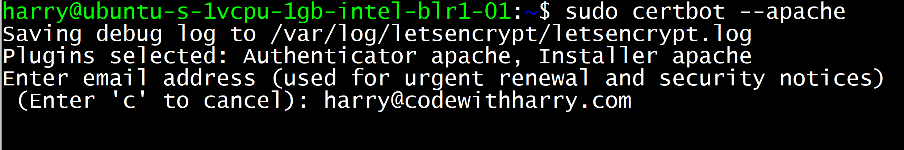

How to get free https on your site using Let's Encrypt SSL on Ubuntu 20.04
Have you ever seen that green padlock at the top in the URL bar which reads "Connection is secure"? In this post, we will discuss how to enable HTTPS for your website hosted on ubuntu 20.04. We will use let's encrypt for this purpose which is a non-profit certificate authority used to get SSL certificates for your website.
Not only that we can use certbot to automatically renew these certificates which makes it a one-time task for a single domain.
We will assume that you already have a domain pointed to the IP address of your VPS. Follow the steps below:
Step 1 - Install lets encrypt
Execute the following commands to install let's encrypt on ubuntu:
sudo apt install certbot python3-certbot-apache
Step 2 - Allow HTTPS through the firewall and configure Apache2 virtual hosts
If you are using Apache, enter the following commands to allow Apache2 over the firewall:
sudo ufw allow 'Apache Full'
Step 3 - Obtain an SSL certificate
Run the following command to obtain an SSL certificate:
sudo certbot --apache
This command shows you some prompts and finally installs an SSL certificate on the domain of your choice.

Step 4 - Test the auto-renewal process
Certbot, by default, takes care of the auto-renewal process for your SSL certificate. You can test the auto-renewal of your SSL certificate by running the following command:
sudo systemctl status certbot.timer
You can even do a dry run of the auto-renewal by using this command:
sudo certbot renew --dry-run
Hope this guide was helpful for you to install an SSL certificate on your server. Happy coding!